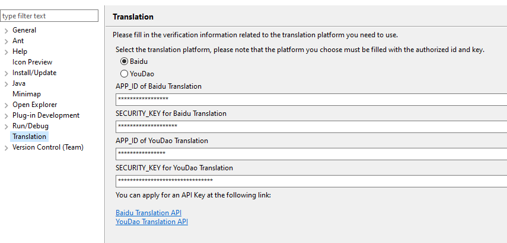

The Translation Preference Page
Open Window > Preferences > Translation to configure plugin behavior and credentials.
1. Translation Platform
- Select one or multiple translation services (Baidu, Youdao, etc)
>
- This setting is synchronized with the status bar selector
2. API Credentials
- Each translation platform requires its own set of keys:
- Baidu:
APP_ID and SECURITY_KEY
- Youdao:
KEY and KEYFROM
- Others: see their official documentation

3. Notes
- Make sure your API credentials are valid
- Enable only platforms you’ve configured